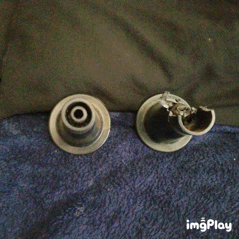

You've got 2 photos here, depicting some furniture legs that I own. Both photos show two legs, the one on the right in each photo is obviously, worse for the wear (It's just the same items each time perceived from a different viewing angle).
I was considering having you attempt to use that lathe which Dad used to own, and manufacture a somewhat more stout version of the poor one on the right (out of wood -- but that would take too much time). I even have the dimensions, but I'm not going to bother you with it. I'm really not going to bother you with it.
The guy at one of the home-building projects that I recently worked at (some weeks back), had some scrap (very thick -- 1 3/8 inches or better) MDF, that they had me toss into a dumpster. It didn't make it to the dumpster.
I just knifed off two short slabs of the stuff with a bucksaw, and slapped it in -- in place of the "worse for the wear" leg.
If I knife off a third piece of said MDF, I can drill a socket into it and increse even further, the time between maintenance incidents.
Problem solved. I thought you might want to look at this.